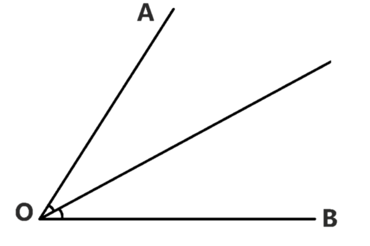
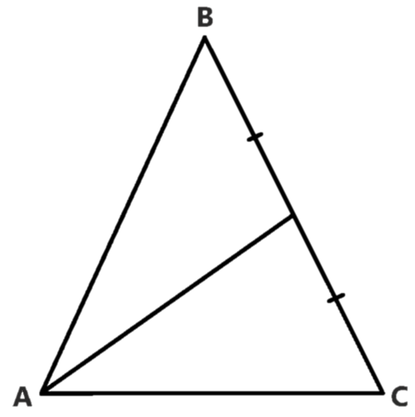
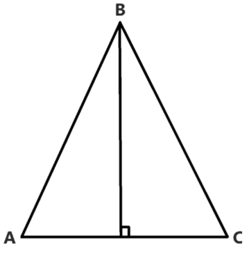
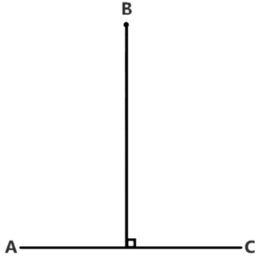
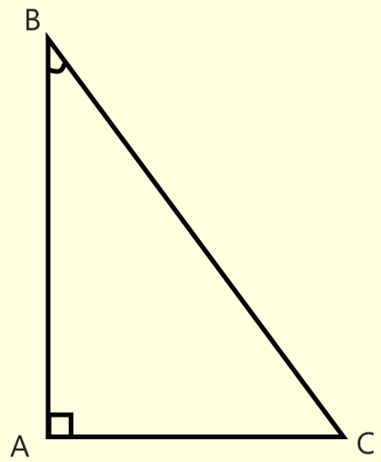

*
Геометрия
Биссектриса угла — луч, исходящий из вершины угла и делящий этот угол на два равных угла.

Медиана — отрезок в треугольнике, соединяющий вершину треугольника с серединой стороны, противоположной этой вершине.

Высота — отрезок перпендикуляра, опущенного из вершины геометрической фигуры
на её основание или на продолжение основания.

Расстояние от точки до прямой — длина перпендикуляра, опущенного из данной точки на прямую.

Синус, Косинус, Тангенс, Катангенс:

# Синус угла - в прямоугольном треугольнике отношение противолежащего этому углу катета к гипотенузе (AC / BC).
# Косинус угла - в прямоугольном треугольнике отношение прилежащего к этому углу катета к гипотенузе (AB / BC).
# Тангенс угла - в прямоугольном треугольнике отношение противолежащего катета
к прилежащему или синуса к косинусу.
(AC / AB, sin<B / cos<B)
# Катангенс угла - в прямоугольном треугольнике отношение прилежащего катета
к противолежащему или косинуса к синусу.
(AB / AC, cos<B / sin<B)
# Основное тригонометрическое тождество: сумма квадратов синуса и косинуса угла равна единице.
(sin^2 + cos^2 = 1)